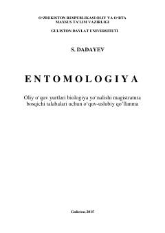

EBiologiya yo'nalishi magistratura talabalari uchun mo'ljallangan entomologiya fanidan o'quv-uslubiy qo'llanma.
Ushbu o'quv-uslubiy qo'llanma oliy o'quv yurtlarining biologiya yo'nalishi magistratura bosqichi talabalari uchun mo'ljallangan. Kitobda entomologiya fanining nazariy va amaliy masalalari zamonaviy pedagogik texnologiyalar asosida yoritilgan.